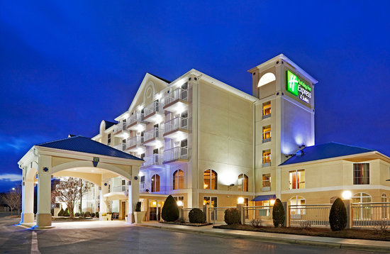
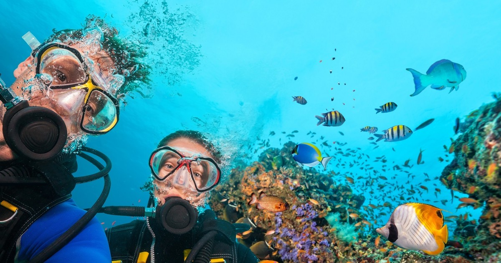

Crawfish is a holiday resort situated along the breathtaking coastline of Puerto Rico. We offer 24 hour services and a relaxing setting. The convenient location is well suited for both work trips and vacation
Accomodations
Our suites vary in size and level. The most popular option is the double room, which is shared by a maximum of two people. There is also the option of paying for full-board or half-board. With full-board, you will have access to the restaurant 24/7. You will also not need to pay for drinks.
Activities
The swimming pool is open 13 hours a day. If you want to venture further, there are lots of activities that are carried out in the resort. These include tennis, scuba diving, snorkeling, and skyjumping. We will also provide you with a tour guide if you want to visit areas that are not in the premesis.
Arrangements and Contact Information
You can visit hotelbookings.com or go to our main website to make a booking. We recommend that you do it early in advance because we are usually full on short-notice. You can also reach us on 555-3210467